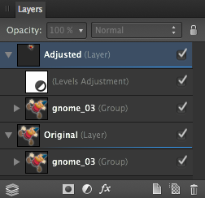
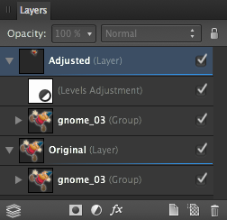
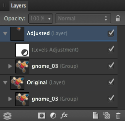

Используйте корректирующие слои для того, чтобы применить корректировку к векторному или пиксельному слою (или объекту). Эта операция осуществляется неразрушающим способом (то есть без внесения необратимых изменений в исходный слой или объект).

До и после применения корректировки.
О корректирующих слоях
Панель Слои предоставляет возможность производить целый ряд корректировок непосредственно на самой панели. Выделенный корректирующий слой применяется к слою или объекту.
Также могут возникнуть ситуации, когда корректирующий слой нужно применить только к одному слою или группе слоев. Это можно легко сделать, выполнив операцию отсечения корректирующего слоя в отдельный слой или подслой.
Корректирующие слои также имеют свойства маскирующих слоев. Области наложения корректирующего слоя могут быть видны или скрыты таким же образом, как и в случае с маскирующим слоем.
Для применения корректировки выполните перечисленные далее действия.
На панели Слои выполните одно из перечисленных ниже действий.
Выделите слой, к которому хотите применить корректировку, в качестве дочернего. Корректировка будет применяться ко всем объектам выделенного слоя, исходя из ее положения в стеке слоев.
Выделите только тот объект или группу, к которым должна применяться корректировка.
Нажмите Корректировки и выберите нужный вариант корректировки во всплывающем меню.
Если для выбранного типа корректировки появится диалоговое окно, выполните следующие действия.
Выберите нужные параметры в диалоговом окне.
Нажмите Закрыть.
Для изменения, объединения или удаления корректирующего слоя выполните перечисленные далее действия.
На панели Слои двойным нажатием выделите корректирующий слой, который следует изменить.
Выберите нужные параметры в диалоговом окне.
Нажмите Закрыть для того, чтобы применить изменения. Нажмите Объединить для того, чтобы применить изменения и объединить корректирующий слой со слоем ниже, или нажмите Удалить для полного удаления корректирующего слоя.
Перемещение корректирующего слоя
Выполните одно из перечисленных ниже действий.
Перетащите корректирующий слой в верхнюю часть панели Слои для того, чтобы корректировка применялась ко всем расположенным ниже слоям.
Перетащите корректирующий слой так, чтобы он располагался выше или ниже объектов слоя для того, чтобы корректировка применялась к большему или меньшему количеству объектов в слое.
Перетащите корректирующий слой на объект для того, чтобы сделать его дочерним объектом и ограничить влияние корректировки только на этот объект.
Для маскирования корректирующего слоя выполните перечисленные далее действия.
На панели Слои выберите корректирующий слой.
Выполните любое из перечисленных ниже действий.
Для стирания с маскирующего слоя используйте инструмент «Кисть стирания».
Для восстановления маскирующего слоя выберите Кисть рисования и начните рисовать.
 
